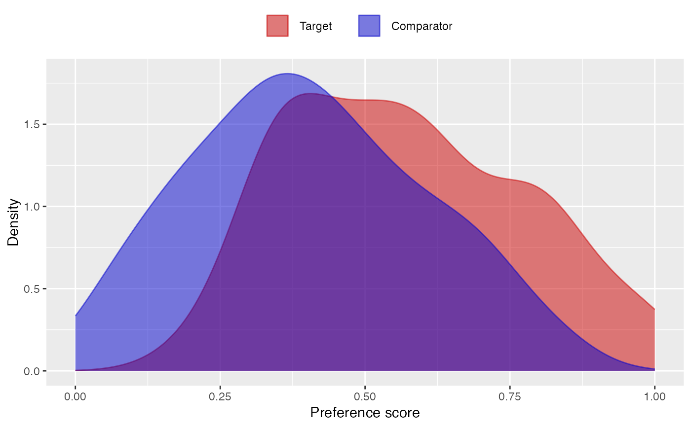

Plots the propensity (or preference) score distribution.
plotPs( data, unfilteredData = NULL, scale = "preference", type = "density", binWidth = 0.05, targetLabel = "Target", comparatorLabel = "Comparator", showCountsLabel = FALSE, showAucLabel = FALSE, showEquiposeLabel = FALSE, equipoiseBounds = c(0.3, 0.7), unitOfAnalysis = "subjects", title = NULL, fileName = NULL )
Arguments
| data | A data frame with at least the two columns described below |
|---|---|
| unfilteredData | To be used when computing preference scores on data from which subjects
have already been removed, e.g. through trimming and/or matching. This data
frame should have the same structure as |
| scale | The scale of the graph. Two scales are supported: |
| type | Type of plot. Four possible values: |
| binWidth | For histograms, the width of the bins |
| targetLabel | A label to us for the target cohort. |
| comparatorLabel | A label to us for the comparator cohort. |
| showCountsLabel | Show subject counts? |
| showAucLabel | Show the AUC? |
| showEquiposeLabel | Show the percentage of the population in equipoise? |
| equipoiseBounds | The bounds on the preference score to determine whether a subject is in equipoise. |
| unitOfAnalysis | The unit of analysis in the input data. Defaults to 'subjects'. |
| title | Optional: the main title for the plot. |
| fileName | Name of the file where the plot should be saved, for example 'plot.png'.
See the function |
Value
A ggplot object. Use the ggplot2::ggsave() function to save to file in a different
format.
Details
The data frame should have a least the following two columns:
treatment (integer): Column indicating whether the person is in the target (1) or comparator (0) group
propensityScore (numeric): Propensity score
References
Walker AM, Patrick AR, Lauer MS, Hornbrook MC, Marin MG, Platt R, Roger VL, Stang P, and Schneeweiss S. (2013) A tool for assessing the feasibility of comparative effectiveness research, Comparative Effective Research, 3, 11-20
Examples
treatment <- rep(0:1, each = 100) propensityScore <- c(rnorm(100, mean = 0.4, sd = 0.25), rnorm(100, mean = 0.6, sd = 0.25)) data <- data.frame(treatment = treatment, propensityScore = propensityScore) data <- data[data$propensityScore > 0 & data$propensityScore < 1, ] plotPs(data)